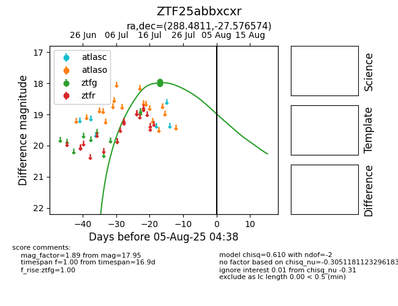

Target ZTF25abbxcxr at 2025-08-05 04:38, see:
FINK: fink-portal.org/ZTF25abbxcxr
Lasair: lasair-ztf.lsst.ac.uk/objects/ZTF25abbxcxr
ALeRCE: alerce.online/object/ZTF25abbxcxr
alt names
ZTF25abbxcxr (ztf,fink)
coordinates:
equatorial (ra, dec) = (288.4811,-27.57657)
galactic (l, b) = (10.0437,-16.76022)
photometry
last ztfg=17.95
3 ztfg detections
